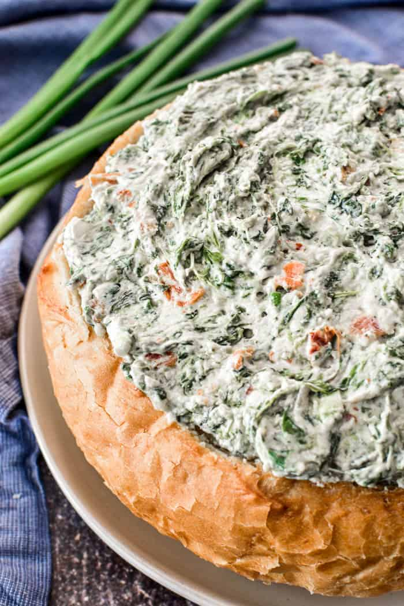

Spinach Dip
Prep Time: 10 Minutes
Cook Time: N/A
Total Time: 10 Minutes
Servings: Feeds 5-10 people

Description
A great tasting, easy to make spinach dip perfect as an appetizer for any party or get together!
Ingredients
- Frozen Chopped Spinach 10oz
- Sour Cream one 16oz container
- Mayonnaise 1 cup, Hellmann's® or Best Foods® is preferred
- Knorr® Vegetable recipe mix 1 package
- Water Chestnuts 1 can 8oz
- Scallions bulb only
- Green Onions 3 (optional)
Steps
This recipe is good for a party setting as an appetizer, and can feed 5-10 people.
- Thaw the box of frozen chopped spinach using your preferred method. The microwave is a quick and easy way just follow the instructions on the spinach packaging.
- Follow the directions on the Knorr® Recipe Mix reduce it to a thicker consistency and leave it sitting to cool.
- Drain and chop the 8oz can of chestnuts.
- Chop the 3 green onions and the scallion bulbs store the green stem of the scallions for later use.
- Once the cooked Knorr® Recipe Mix has cooled, and the chopped spinach has fully thawed, pull out a medium to large sized mixing bowl and mix all the ingredients together well. Using a small mixer on slow speed can help make the process easier, but a wooden spoon or spatula will work just as well.
- Once mixed cover the bowl with cling on and leave it to sit in the fridge for a few hours, overnight is better, or until the entire mixture has chilled to a firm consistency.
- Transfer the dip into your preferred serving bowl, with some crackers chips or vegetables and enjoy!
Lost? Click this link to take you home.